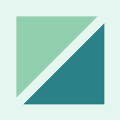
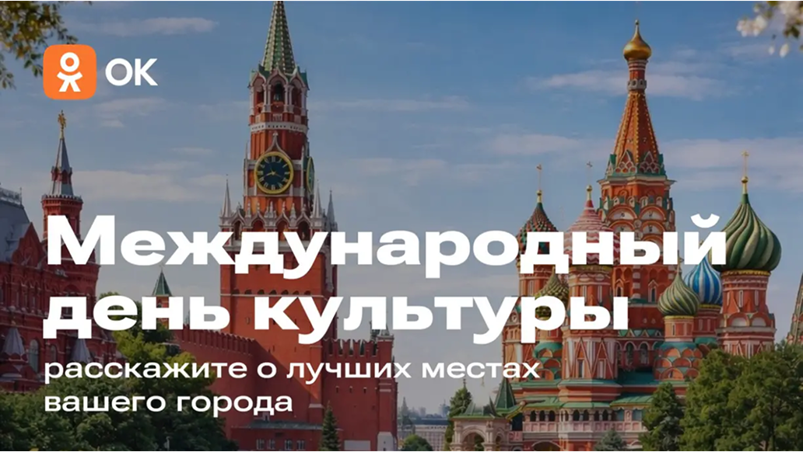

ЦИК: выборы депутатов Госдумы пройдут с 18 по 20 сентября

Летчик-космонавт и депутат ГД Александр Самокутяев умер в возрасте 56 лет
Слово «преддверие» вызвало самые большие проблемы на ЕГЭ по русскому языку
«Единая Россия» предложила заменить предупреждениями штрафы за мелкие нарушения
Трамп назвал условие возвращения санкций против российской нефти
Какой сегодня день

Друзья на сайте
Дождь
+14°
Слабый ветер 4 м/с
Новая луна
Можно стричься
Сажайте помидоры
Козерог
Козероги, в этом месяце вам стоит быть готовыми к неожиданным поворотам судьбы. Возможно, вам придется пересмотреть свои старые планы и адаптироваться к новым обстоятельствам. Не бойтесь изменений — они могут привести к интересным возможностям!